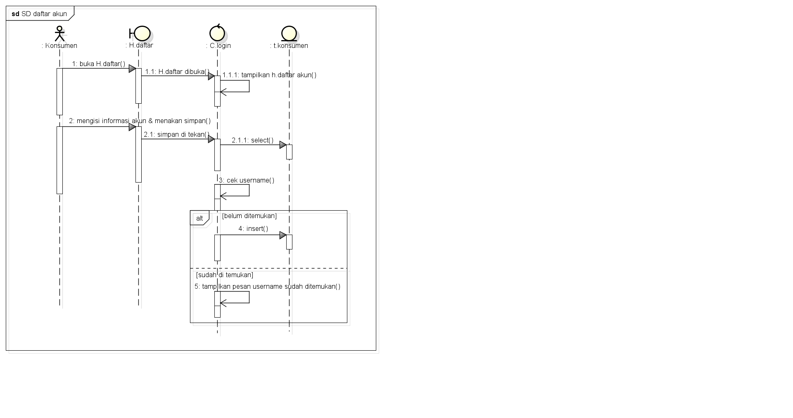
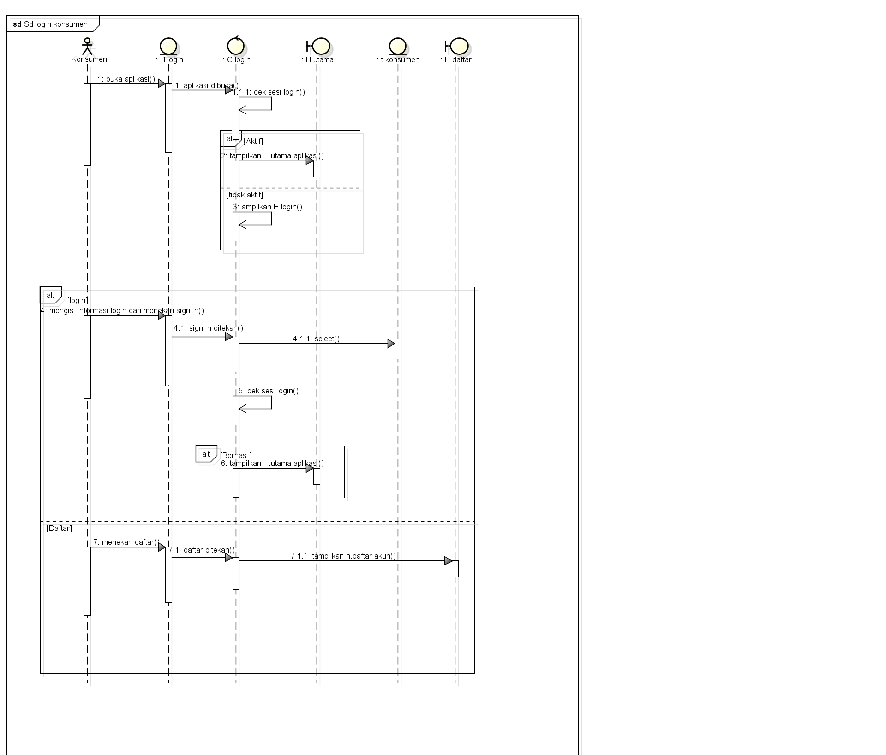

Berisi Saduran Matakuliah Analisis dan Perancangan RPL
Nama : Tekat Tri Wiyono
Nim : 1811500111
Kelompok : TI6J
Matkul : Analisis dan Perancangan PL
Berikut adalah saduran materi saya pada pertemuan ke-7
Sequence Diagram menggambarkan urutan proses yang terjadi
pada sebuah halaman/form pada aplikasi/sistem
Sequence Diagram sangat erat hubungannya dengan Deskripsi
UseCase + Rancangan Layar + Class Diagram
Elemen inti pada Sequence Diagram
Lifeline (Actor), Lifeline (Boundary), Lifeline (Control),
Lifeline (Entity), Message
Actor => pengguna aplikasi/sistem
Boundary => form/halaman di aplikasi
Control => code program
Entity => tabel
Message => aktivitas di aplikasi/sistem
Actor berinteraksi dengan Boundary, Boundary berinteraksi
dengan Control, Control berinteraksi dengan Entity
Masing-masing interaksi digambarkan dengan garis panah
berisi aktivitas (message)
link file latihan astadownload
 